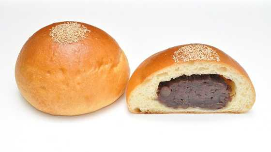
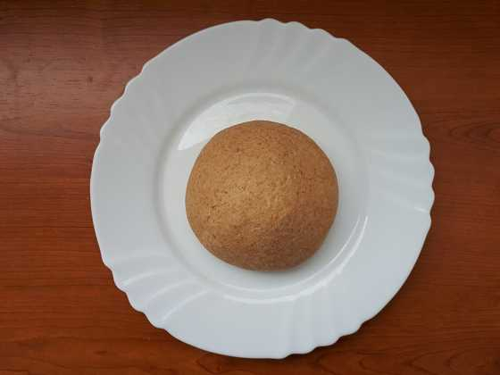
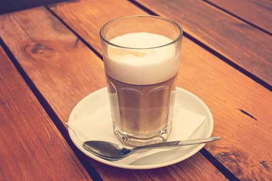

長野県伊那市長谷黒河内・パン屋
パン ちゃるらCHARLA
薪窯のぬくもりの古民家で、焼きたてのパンを手に、ゆっくり“おしゃべり”を。
お店の由来
「ちゃるら」は、スペイン語で「おしゃべり」。
「ちゃるら」はスペイン語で「おしゃべり」「雑談」を意味する言葉。報道によると、お客さんがゆっくり過ごせる場所にしたい、という思いが込められているそうです。
店主の古川浩二さんは、愛知県から長谷へ移住。信州大学農学部を卒業後、化学系企業に勤めたのち退職し、愛知県のパン店で半年ほど修業してから独立しました。物件はインターネットで見つけた築約130年の古民家で、約1年かけて改修。窯は師匠の指導を受けて手作りし、薪でパンを焼いています。
パンは自家製酵母でゆっくり発酵させ、国内産小麦粉を使用。店内には手作りの木のテーブルと椅子のイートインがあります。

上記は2024年の報道で伝えられた内容に基づきます。現在の状況は変わっている可能性があるため、最新情報はInstagramをご確認ください。
出典: 伊那経済新聞 / 長野日報 / 伊那谷ねっと


パンのこと
薪窯で焼く、素朴なパンたち。
報道では、クリームパン、おやきパン、メロンパン、ライ麦パン、あんぱん、季節の野菜を使った惣菜パン、食パンなど、約20種類が紹介されていました。内容は日によって変わる場合があります。写真はイメージです。

あんぱん
報道で紹介されたパンのひとつ。

メロンパン・菓子パン
クリームパン、メロンパンなど。

食パン
食パンも販売と紹介されていました。

ライ麦パンなど
ライ麦パンが紹介されていました。

惣菜パンなど
季節の野菜を使った惣菜パンも。

イートイン
木のテーブルでひと休み。ドリンクは準備中。
| 価格 | 準備中 |
|---|---|
| 営業時間 | 準備中 |
| 定休日 | 準備中 |
営業日・価格・品ぞろえは変わることがあるため掲載していません。最新はInstagramをご覧ください。


口コミ
こんな声が届くお店に。
古民家の雰囲気に癒やされました。席でパンをかじりながら、つい長居してしまいました。
20代・女性(創作のイメージ)素朴で、噛むほど小麦の味がします。薪窯で焼いたと聞いて納得でした。
40代・男性(創作のイメージ)山あいの道をドライブした帰りに寄りました。ゆっくり話せる、のんびりした空気が好きです。
30代・女性(創作のイメージ)※上の口コミは試作用に制作側が作成した創作で、実在のお客様の声ではありません。
写真クレジット
掲載写真はフリー素材のイメージで、お店の実際の様子ではありません(国外・撮影地不明のものを含みます)。縮小などの加工をしています。ライセンスの詳細は creativecommons.org をご覧ください。
- oven-flame.jpg / Brick-oven-thumbnail.jpg / Beboplu / CC0 1.0(撮影地: 不明)/ 出典
- anpan.jpg / Anpan 001.jpg / Ocdp / CC0 1.0(撮影地: 不明)/ 出典
- oven-shelves.jpg / Loaves of Bread (Unsplash).jpg / Clark Young / CC0 1.0(撮影地: 不明)/ 出典
- rye-ears.jpg / Rye Mature Grain Summer.jpg / Tappancs / CC0 1.0(撮影地: 不明)/ 出典
- bun-plate.jpg / Ohsawa bread dough 2.jpg / Fructibus / CC0 1.0(撮影地: 不明)/ 出典
- rolls.jpg / Basket of rolls.jpg / Daniel Sone(米国NIH/国立がん研究所) / パブリックドメイン(creativecommons.org)(撮影地: 撮影地不明(米国の機関由来))/ 出典
- latte.jpg / The cup of coffee on a wooden table (47939081677).jpg / Artem Beliaikin / CC BY 2.0(撮影地: 不明)/ 出典
- planks.jpg / Weatherworn planks on top of wooden table.jpg / W.carter / CC0 1.0(撮影地: スウェーデン)/ 出典
- croissant.jpg / Croissants au beurre (18953292873).jpg / Herry Wibisono (herryway) / CC0 1.0(撮影地: 不明)/ 出典
- baguette.jpg / Baguettes - stonesoup.jpg / jules / stonesoup / CC BY 2.0(撮影地: 不明)/ 出典
- round.jpg / Sourdough Loaf (217346645).jpg / Dana Hutchinson / CC BY 3.0(撮影地: 米国ワシントン州)/ 出典
- slices.jpg / Slices of sourdough bread.jpg / Angel Ganev / CC BY 2.0(撮影地: 不明)/ 出典
- tin.jpg / Tin Loaf - one slash in the crust.jpg / Mike Finn / CC BY 2.0(撮影地: 不明)/ 出典
- wheat.jpg / Sunrise in a wheat field near Cambridge, UK.jpg / sagesolar / CC BY 2.0(撮影地: 英国・ケンブリッジ近郊)/ 出典